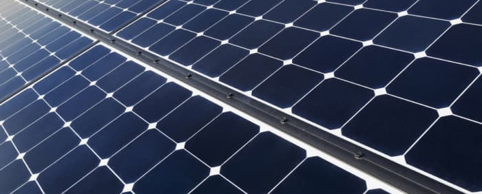
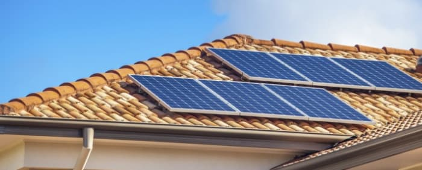

FOTON-TECH
Instalaja
INSTALACJA
Dlaczego Panele Fotowoltaiczne
Jako firma Foton-Tech zapewniamy kompleksową obsługę od zaprojektowania systemu poprzez dostarczanie urządzeń po ich instalację oraz przyłączenie do sieci. Pomagamy w załatwieniu wszystkich potrzebnych dokumentów i formalnośći związanych z przyłączeniem instalacji do sieci eneregtycznej. Zadowolenie naszych Klientów jest dla nas sprawą najważaniejszą, dlatego też dokładamy wszelkich starań, aby zamówienia były realizowane błyskawicznie, a oferowany towar był najwyższej jakości.
RIle i jakiego rodzaju paneli słonecznych
będziesz potrzebować?
Zależy to od wielu czynników, w tym od dostępnej przestrzeni, miejsca zamieszkania i ilości pieniędzy, które musisz wydać na panele słoneczne. Niektóre panele słoneczne są znacznie bardziej wydajne, ale znacznie droższe. Niektóre mniej wydajne typy paneli słonecznych są tańsze, ale będą wymagać zakupu większej liczby paneli słonecznych, aby zrekompensować ich opóźnienia w wydajności. Może mieszkasz w obszarze, w którym nie ma dużo słońca. Może mieszkasz w okolicy, która cieszy się obfitością słońca. Są to wszystkie czynniki, które należy wziąć pod uwagę przy wyborze właściwych paneli słonecznych i określeniu, który system jest odpowiedni dla twoich potrzeb mieszkaniowych.
Istnieją trzy główne typy paneli słonecznych: monokrystaliczne krzemowe panele słoneczne, polikrystaliczne krzemowe panele słoneczne i cienkowarstwowe ogniwa słoneczne. Są one wymienione w kolejności malejącej od wydajności paneli i kosztów. Monokrystaliczne krzemowe panele słoneczne są najbardziej wydajnymi panelami, ale mają wyższą cenę niż cienkowarstwowe ogniwa słoneczne. Cienkowarstwowe ogniwa słoneczne są świetne, jeśli masz dużo miejsca, ponieważ kosztują mniej, ale musisz zainstalować ich więcej, aby uzyskać te same korzyści i zwrot energii. Ale większość właścicieli domów nie ma wystarczającej ilości miejsca na tego rodzaju ogniw słonecznych. Wszystko jest kompromisem, badając zalety i wady każdego rodzaju.
Rozpoczęcie procesu instalacji
Jeśli przeprowadziłeś badania, skontaktowałeś się z naszą firmą instalacyjną i jesteś gotowy do instalacji, to jak szybko zaczniesz zauważać zwrot z inwestycji?
Średni okres zwrotu instalacji wynosi od 5 do 7 lat. Przyjmując, że instalacja będzie pracowała bezawaryjnie przez minimum 25 lat to 18 lat generuje się zyski ( i więcej).
Opowiedzmy również o tym, co tak naprawdę dzieje się po zainstalowaniu paneli słonecznych w domu i o tym, jak przekształcają światło słoneczne w energię:
Po pierwsze, panele słoneczne przekształcają światło słoneczne w prąd stały. Falownik (część systemu energii słonecznej, który przekształca zmagazynowaną energię w napięcie potrzebne do zasilania standardowego sprzętu elektrycznego) przekształca tę energię prądu stałego na prąd przemienny. Twój dom pobiera potrzebną energię w oparciu o liczbę jednostek elektrycznych wymagających energii. Jeśli mieszkaniowy układ słoneczny jest również podłączony do sieci, wszelka dodatkowa, nieużywana energia elektryczna jest przekazywana z powrotem do sieci (lub do baterii, jeśli masz zapasową baterię).
W takich przypadkach zazwyczaj kwalifikujesz się do czegoś, co nazywa się licznikiem netto. Jest to zasadniczo kredyt przyznawany na rachunek energetyczny od przedsiębiorstwa energetycznego. Kiedy pobierasz energię z sieci (ponieważ nie masz już wystarczającej ilości energii słonecznej do zużywania), pomiar netto kompensuje ilość energii, którą oddałeś sieci. Zasadniczo możliwe jest wyjście z zerowym saldem, ponieważ to, co wkładasz do sieci (z paneli słonecznych), jest mniej więcej taką samą ilością, jaką pobierałeś z sieci (np. W nocy).
Po pierwsze, panele słoneczne przekształcają światło słoneczne w prąd stały. Falownik (część systemu energii słonecznej, który przekształca zmagazynowaną energię w napięcie potrzebne do zasilania standardowego sprzętu elektrycznego) przekształca tę energię prądu stałego na prąd przemienny. Twój dom pobiera potrzebną energię w oparciu o liczbę jednostek elektrycznych wymagających energii. Jeśli mieszkaniowy układ słoneczny jest również podłączony do sieci, wszelka dodatkowa, nieużywana energia elektryczna jest przekazywana z powrotem do sieci (lub do baterii, jeśli masz zapasową baterię).
W takich przypadkach zazwyczaj kwalifikujesz się do czegoś, co nazywa się licznikiem netto. Jest to zasadniczo kredyt przyznawany na rachunek energetyczny od przedsiębiorstwa energetycznego. Kiedy pobierasz energię z sieci (ponieważ nie masz już wystarczającej ilości energii słonecznej do zużywania), pomiar netto kompensuje ilość energii, którą oddałeś sieci. Zasadniczo możliwe jest wyjście z zerowym saldem, ponieważ to, co wkładasz do sieci (z paneli słonecznych), jest mniej więcej taką samą ilością, jaką pobierałeś z sieci (np. W nocy).
W niektórych ekstremalnie wiejskich miejscach, z ograniczoną lub zerową dostępnością sieci, możesz zainstalować domowe systemy słoneczne, które nie są podłączone do sieci. Twoja konwersja światła słonecznego jest taka sama; nie będzie jednak możliwości podłączenia do sieci, gdy skończy się energia słoneczna. Ten typ słonecznego układu elektrycznego wymaga znacznego monitorowania zużycia energii, aby upewnić się, że masz wystarczającą ilość energii, aby przejść przez cały dzień.
Zanim cokolwiek zostanie zainstalowane, nasz inżynier skontaktuje się z tobą i oceni twój dom pod kątem właściwego rodzaju instalacji - pytając cię i konsultując się w następujących kwestiach:
Ile będziesz miał słońca
Gdzie zostanie umieszczony system (na dachu, na ziemi)
Jak duży będzie system, aby zaspokoić twoje potrzeby energetyczne
Czy będziesz podłączony do sieci, czy nie do sieci
Po omówieniu tych kwestii, nasz inżynier zaleci najlepszy system słoneczny do potrzeb mieszkalnych i będzie można rozpocząć proces instalacji paneli słonecznych.
Instalowanie paneli słonecznych
Jeśli chodzi o instalację paneli słonecznych, najlepszym rozwiązaniem jest zatrudnienie profesjonalisty. Nasi inżynierowie są dobrze zaznajomieni z energią słoneczną, znają sposoby instalacji, mogą zmaksymalizować zwrot z inwestycji, instalując i ustawiając panele we właściwy sposób i mogą zagwarantować, że instalację będzie można bezpiecznie używać.
Cały proces instalacji trwa średnio około dwóch dni, jednak może się on wydłużyć w zależności od wielkośći instalacji i miejsca, w którym instalacja będzie zamontowana.
Konserwacja, naprawa i koszty
Podobnie jak w przypadku każdego rodzaju systemu, trzeba go konserwować. Przegląd można wykonać raz w roku i sprawdzić pod względem poprawnego działania całej instalacji. Dzięki temu będzie można cieszyć się wieloletnimi oszczędnościami kosztów energii zainstalowanego systemu energii słonecznej.
Jak długo możesz oczekiwać, że twój
układ słoneczny będzie trwał?
Większość domowych systemów paneli słonecznych działa przez ponad 25 lat. Jeśli więc zastanawiasz się nad wysoką ceną tych systemów, spróbuj pomyśleć o oszczędnościach kosztów energii z tego długiego okresu.
Podsumowując
Na początku trzeba wnieść pewien wkład finansowy, ale w dalszym etapie generuje to ogromną korzyść dla twojego portfela i ogromną korzyść dla środowiska. Tempo wzrostu zużycia energii słonecznej to świetny trend. Po okresie zwrotu, generujesz czysty zysk z zainstalowanego układu słonecznego.